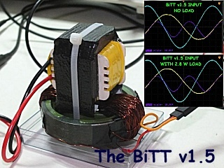

Click here for the ENGLISH VERSION
22 février 2013 - DLE-TEST05 : Suite aux tests DLE-TEST03 de ma réplication du transformateur Bi-Toroïde (BiTT v1.0) de Thane C Heins, j'ai constaté que les paramètres de la bobine primaire (le facteur L/R) et les caractéristiques de son noyau ferromagnétique utilisés dans l'armature du BiTT avaient un rôle très important pour obtenir l'effet de déphasage de 90° (où Cos(F) = 0) entre le courant et la tension permettant d'obtenir l'Effet Heins. J'ai donc changé la bobine primaire mais conservé l'armature bi-toroïde et les bobines secondaires.
Voici donc le nouveau transformateur Bi-Toroïd BiTT v1.5 :
Le primaire est constitué d'une inductance (Hi-Pot) utilisée dans les alimentations à découpage. Le flanc latéral a été scié pour connecter le flux magnétique du primaire aux deux petites branches du transformateur Bi-Toroïde.


Voici la configuration de ce TEST-DLE05 :

Afin d'optimiser l'impédance de la charge connectée et de faire une mesure de la puissance en sortie du BiTT v1.5, j'ai connecté un Wattmètre BF professionel Ferisol N300C aux bornes des 2 secondaires du transformateur. Voici les spécifications techniques de ce Wattmètre Ferisol N300C :

Les mesures de la tension, du courant et du déphasage (tension, courant) sont effectuées à l'aide d'un oscilloscope numérique Rigol.

Ci-dessus, la tension (CH1 en jaune) et le courant (CH2 en bleu).
Ici, le courant est en retard sur la tension de 72° soit un Cos(F) = 0.309

Lorque le BiTT v1.5 est en charge sur une impédance de 4 Ohm (2.8 Watt mesurés sur les sorties), on constate qu'il n'y a pas de variation des paramètres du primaire (tension, courant, déphasage)...


Voici la vidéo des tests effectués sur mon transformateur Bi-Toroïd BiTT v1.5 de Thane C. Heins
Commentaires :
Les résultats des tests de cette nouvelle version du Transformateur Bi-Toroïde v1.5, réplication du BiTT de Thane C. Heins, sont très encourageants. L'effet Heins est bien présent ici, lorsque le BiTT v1.5 délivre 2.8 Watt en sortie, il n'y a aucune rétro-action de la puissance sur l'entrée. La performance de la bobine primaire est un facteur important dans la réussite, il faut que le déphasage entre la tension et le courant du primaire (sans charge) soit au plus proche de 90° (quadrature ou Cos(F) = 0) et cela implique que le facteur L/R doit être élevé. Ma version de ce transformateur BiTT v1.5 n'est pas encore sur-unitaire car la bobine primaire a encore trop de pertes par effet Joule (L/R encore trop faible, et Cos(F) = 0.309 trop élevé) et le noyau ferromagnétique est à améliorer. Je vais réaliser un nouveau modèle de BiTT prochainement...
Comme
le dit Thane C. Heins dans le document "How
to make a Bi-Toroid Transformer and Exceed 100% Efficiency":
<<The
Bi-Toroid Transformer (BiTT) operates as a Magnetic Diode,
consumes almost pure reactive power but delivers real power to
the loads and only allows the transfer of energy in one
direction. Because the BiTT primary is isolated from the
secondary on-load induced flux, the BiTT primary power factor and
current do not change from no-load to on-load. With a purely
resistive load on the BiTT the primary power factor is virtually
zero and the efficiency of the energy transfer is increased
accordingly.>>
Stay tuned,
Email: jnaudin509@aol.com
Documents et références :
How to make a Bi-Toroid Transformer and Exceed 100% Efficiency by Thane C. Heins PD inc.
le brevet du moteur/generateur "Perepitea" de Thane C. Heins
TEST SUIVANT